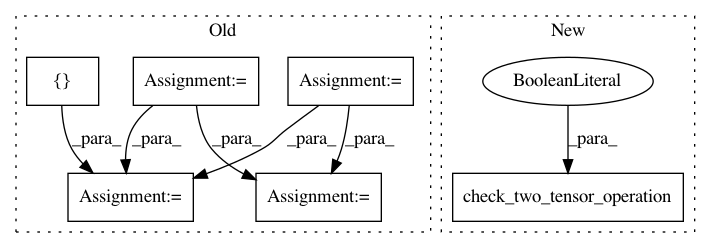

be6d8293f26d6d577b61874ccf6d68f116734d5a,tests/keras/backend/backend_test.py,TestBackend,test_conv,#TestBackend#Any#Any#Any#Any#Any#,1028
Before Change
k = K.backend()
_, x = parse_shape_or_val(input_shape)
_, w = parse_shape_or_val(kernel_shape)
y1 = KNP.conv(x, w, padding, data_format)
y2 = check_two_tensor_operation(
op, x, w, [KTH if k == "theano" else KC if k == "cntk" else KTF],
padding=padding, data_format=data_format,
cntk_dynamicity=True, return_results=True)
assert_allclose(y1, y2, atol=1e-05)
@pytest.mark.parametrize("op,input_shape,kernel_shape,padding,data_format", [
("depthwise_conv2d", (2, 3, 4, 5), (3, 3, 3, 2), "same", "channels_first"),
After Change
("conv3d", (1, 3, 5, 4, 2), (3, 3, 3, 2, 3), "same", "channels_last"),
])
def test_conv(self, op, input_shape, kernel_shape, padding, data_format):
check_two_tensor_operation(
op, input_shape, kernel_shape, WITH_NP,
padding=padding, data_format=data_format,
cntk_dynamicity=True)
@pytest.mark.parametrize("op,input_shape,kernel_shape,padding,data_format", [
("depthwise_conv2d", (2, 3, 4, 5), (3, 3, 3, 2), "same", "channels_first"),
("depthwise_conv2d", (2, 3, 5, 6), (4, 3, 3, 4), "valid", "channels_first"),
In pattern: SUPERPATTERN
Frequency: 3
Non-data size: 6
Instances
Project Name: keras-team/keras
Commit Name: be6d8293f26d6d577b61874ccf6d68f116734d5a
Time: 2018-08-28
Author: me@taehoonlee.com
File Name: tests/keras/backend/backend_test.py
Class Name: TestBackend
Method Name: test_conv
Project Name: keras-team/keras
Commit Name: be6d8293f26d6d577b61874ccf6d68f116734d5a
Time: 2018-08-28
Author: me@taehoonlee.com
File Name: tests/keras/backend/backend_test.py
Class Name: TestBackend
Method Name: test_depthwise_conv
Project Name: keras-team/keras
Commit Name: b95fcf7f52aca8ad0b1afb3cfc64c8eed534fafe
Time: 2017-07-29
Author: me@taehoonlee.com
File Name: tests/keras/backend/backend_test.py
Class Name: TestBackend
Method Name: test_nn_operations